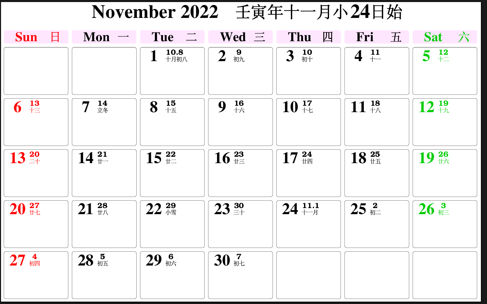
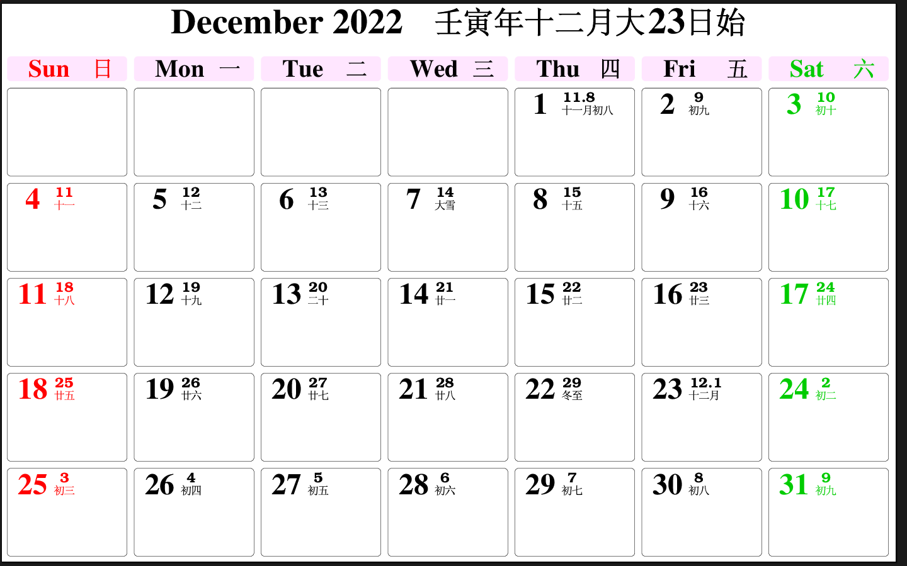
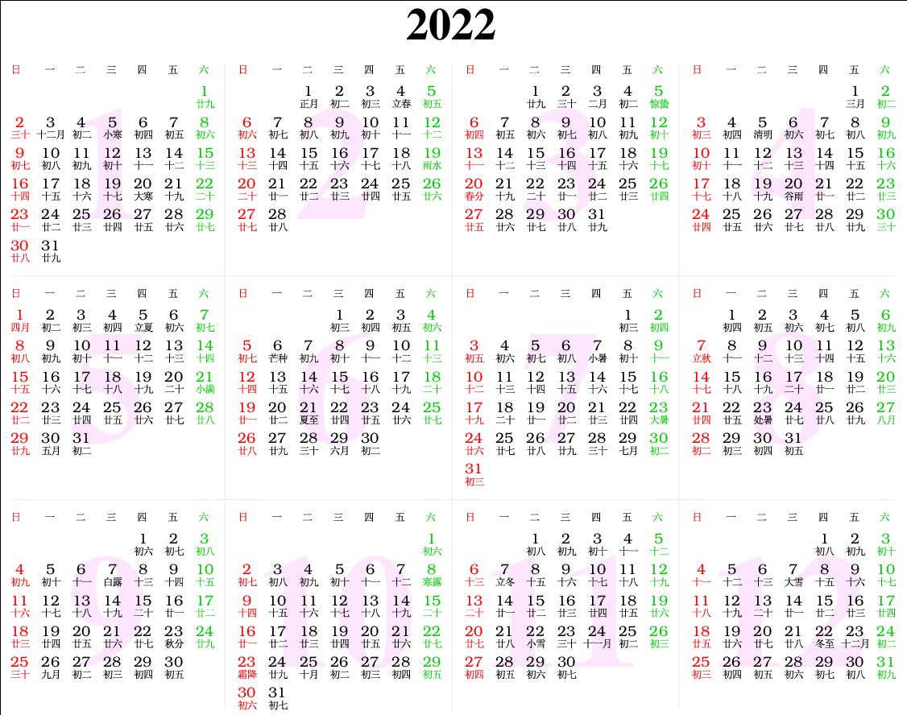
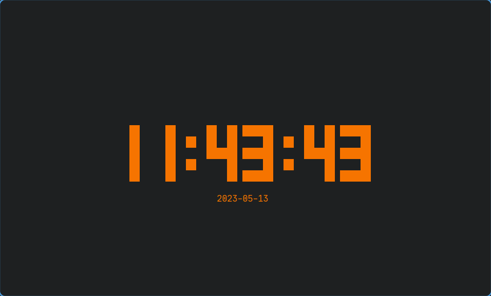

部分工具软件清单
注，该文章将看情况偶尔过来说两句
1. "绘图"
1.1. lolcat
它是一个可以输出渐变彩色的工具，或许能让你的一些输出变得更加炫酷。它的工作依赖 ruby。
1.2. cowsay
它能够将你所指定的字符整合进入一副字符画中。像下面一样：
______________
< hello world! >
--------------
\ ^__^
\ (oo)\_______
(__)\ )\/\
||----w |
|| ||
或许这是一个输出通知的好工具
1.3. figlet
这是一个用字符“绘制”字符（仅限英文）的工具，可以作出一些有趣的效果：
$ figlet "Hello World\!" _ _ _ _ __ __ _ _ _ | | | | ___| | | ___ \ \ / /__ _ __| | __| | | | |_| |/ _ \ | |/ _ \ \ \ /\ / / _ \| '__| |/ _` | | | _ | __/ | | (_) | \ V V / (_) | | | | (_| |_| |_| |_|\___|_|_|\___/ \_/\_/ \___/|_| |_|\__,_(_)
2. 与时间有关
2.1. 日历
2.1.1. cal
一个十分简洁的日历软件。终端输出：
$ cal
十二月 2022
一 二 三 四 五 六 日
1 2 3 4
5 6 7 8 9 10 11
12 13 14 15 16 17 18
19 20 21 22 23 24 25
26 27 28 29 30 31
$ cal -y
2022
一月 二月 三月
一 二 三 四 五 六 日 一 二 三 四 五 六 日 一 二 三 四 五 六 日
1 2 1 2 3 4 5 6 1 2 3 4 5 6
3 4 5 6 7 8 9 7 8 9 10 11 12 13 7 8 9 10 11 12 13
10 11 12 13 14 15 16 14 15 16 17 18 19 20 14 15 16 17 18 19 20
17 18 19 20 21 22 23 21 22 23 24 25 26 27 21 22 23 24 25 26 27
24 25 26 27 28 29 30 28 28 29 30 31
31
四月 五月 六月
一 二 三 四 五 六 日 一 二 三 四 五 六 日 一 二 三 四 五 六 日
1 2 3 1 1 2 3 4 5
4 5 6 7 8 9 10 2 3 4 5 6 7 8 6 7 8 9 10 11 12
11 12 13 14 15 16 17 9 10 11 12 13 14 15 13 14 15 16 17 18 19
18 19 20 21 22 23 24 16 17 18 19 20 21 22 20 21 22 23 24 25 26
25 26 27 28 29 30 23 24 25 26 27 28 29 27 28 29 30
30 31
七月 八月 九月
一 二 三 四 五 六 日 一 二 三 四 五 六 日 一 二 三 四 五 六 日
1 2 3 1 2 3 4 5 6 7 1 2 3 4
4 5 6 7 8 9 10 8 9 10 11 12 13 14 5 6 7 8 9 10 11
11 12 13 14 15 16 17 15 16 17 18 19 20 21 12 13 14 15 16 17 18
18 19 20 21 22 23 24 22 23 24 25 26 27 28 19 20 21 22 23 24 25
25 26 27 28 29 30 31 29 30 31 26 27 28 29 30
十月 十一月 十二月
一 二 三 四 五 六 日 一 二 三 四 五 六 日 一 二 三 四 五 六 日
1 2 1 2 3 4 5 6 1 2 3 4
3 4 5 6 7 8 9 7 8 9 10 11 12 13 5 6 7 8 9 10 11
10 11 12 13 14 15 16 14 15 16 17 18 19 20 12 13 14 15 16 17 18
17 18 19 20 21 22 23 21 22 23 24 25 26 27 19 20 21 22 23 24 25
24 25 26 27 28 29 30 28 29 30 26 27 28 29 30 31
31
$ cal -h
用法：
cal [选项] [[[日] 月] 年]
cal [选项] <时间戳|月份名>
显示日历或部分日历。
不带参数时，显示当月日历。
选项：
-1, --one 只显示一个月(默认)
-3, --three 显示该日期前后三个月
-n, --months < 数字> 显示以日期所在月份开始的若干个月
-S, --span 显示多个月份时的日期范围
-s, --sunday 周日作为一周的第一天
-m, --monday 周一作为一周的第一天
-j, --julian use day-of-year for all calendars
--reform <val> Gregorian reform date (1752|gregorian|iso|julian)
--iso --reform=iso 的别名
-y, --year 显示全年
-Y, --twelve 显示之后的 12 个月
-w, --week[=<数字>] 显示美国或 ISO-8601 周数
-v, --vertical show day vertically instead of line
--color[=<when>] colorize messages (auto, always or never)
默认启用颜色
-h, --help 显示此帮助
-V, --version 显示版本
更多信息请参阅 cal(1)。
2.1.2. ccal
日历软件，可以看作是`cal`的升级版，可以查看农历，还可以用PostScrip、html、xml格式输出。
终端输出
$ ccal
December 2022 (Year RenYin, Month 12D S23)
Sunday Monday Tuesday Wednesday Thursday Friday Saturday
1 [ 8] 2 [ 9] 3 [10]
4 [11] 5 [12] 6 [13] 7 [DX] 8 [15] 9 [16] 10 [17]
11 [18] 12 [19] 13 [20] 14 [21] 15 [22] 16 [23] 17 [24]
18 [25] 19 [26] 20 [27] 21 [28] 22 [DZ] 23 [12]Y 24 [ 2]
25 [ 3] 26 [ 4] 27 [ 5] 28 [ 6] 29 [ 7] 30 [ 8] 31 [ 9]
$ ccal -u
December 2022 壬寅年十二月大23日始
Sun 日 Mon 一 Tue 二 Wed 三 Thu 四 Fri 五 Sat 六
1 初八 2 初九 3 初十
4 十一 5 十二 6 十三 7 大雪 8 十五 9 十六 10 十七
11 十八 12 十九 13 二十 14 廿一 15 廿二 16 廿三 17 廿四
18 廿五 19 廿六 20 廿七 21 廿八 22 冬至 23 十二月 24 初二
25 初三 26 初四 27 初五 28 初六 29 初七 30 初八 31 初九
$ ccal -u 2022
January 2022 辛丑年十二月小3日始
Sun 日 Mon 一 Tue 二 Wed 三 Thu 四 Fri 五 Sat 六
1 廿九
2 三十 3 十二月 4 初二 5 小寒 6 初四 7 初五 8 初六
9 初七 10 初八 11 初九 12 初十 13 十一 14 十二 15 十三
16 十四 17 十五 18 十六 19 十七 20 大寒 21 十九 22 二十
23 廿一 24 廿二 25 廿三 26 廿四 27 廿五 28 廿六 29 廿七
30 廿八 31 廿九
February 2022 壬寅年正月大1日始
Sun 日 Mon 一 Tue 二 Wed 三 Thu 四 Fri 五 Sat 六
1 正月 2 初二 3 初三 4 立春 5 初五
6 初六 7 初七 8 初八 9 初九 10 初十 11 十一 12 十二
13 十三 14 十四 15 十五 16 十六 17 十七 18 十八 19 雨水
20 二十 21 廿一 22 廿二 23 廿三 24 廿四 25 廿五 26 廿六
27 廿七 28 廿八
March 2022 壬寅年二月小3日始
Sun 日 Mon 一 Tue 二 Wed 三 Thu 四 Fri 五 Sat 六
1 廿九 2 三十 3 二月 4 初二 5 惊蛰
6 初四 7 初五 8 初六 9 初七 10 初八 11 初九 12 初十
13 十一 14 十二 15 十三 16 十四 17 十五 18 十六 19 十七
20 春分 21 十九 22 二十 23 廿一 24 廿二 25 廿三 26 廿四
27 廿五 28 廿六 29 廿七 30 廿八 31 廿九
April 2022 壬寅年三月大1日始
Sun 日 Mon 一 Tue 二 Wed 三 Thu 四 Fri 五 Sat 六
1 三月 2 初二
3 初三 4 初四 5 清明 6 初六 7 初七 8 初八 9 初九
10 初十 11 十一 12 十二 13 十三 14 十四 15 十五 16 十六
17 十七 18 十八 19 十九 20 谷雨 21 廿一 22 廿二 23 廿三
24 廿四 25 廿五 26 廿六 27 廿七 28 廿八 29 廿九 30 三十
May 2022 壬寅年四月小1日始，五月大30日始
Sun 日 Mon 一 Tue 二 Wed 三 Thu 四 Fri 五 Sat 六
1 四月 2 初二 3 初三 4 初四 5 立夏 6 初六 7 初七
8 初八 9 初九 10 初十 11 十一 12 十二 13 十三 14 十四
15 十五 16 十六 17 十七 18 十八 19 十九 20 二十 21 小满
22 廿二 23 廿三 24 廿四 25 廿五 26 廿六 27 廿七 28 廿八
29 廿九 30 五月 31 初二
June 2022 壬寅年六月大29日始
Sun 日 Mon 一 Tue 二 Wed 三 Thu 四 Fri 五 Sat 六
1 初三 2 初四 3 初五 4 初六
5 初七 6 芒种 7 初九 8 初十 9 十一 10 十二 11 十三
12 十四 13 十五 14 十六 15 十七 16 十八 17 十九 18 二十
19 廿一 20 廿二 21 夏至 22 廿四 23 廿五 24 廿六 25 廿七
26 廿八 27 廿九 28 三十 29 六月 30 初二
July 2022 壬寅年七月小29日始
Sun 日 Mon 一 Tue 二 Wed 三 Thu 四 Fri 五 Sat 六
1 初三 2 初四
3 初五 4 初六 5 初七 6 初八 7 小暑 8 初十 9 十一
10 十二 11 十三 12 十四 13 十五 14 十六 15 十七 16 十八
17 十九 18 二十 19 廿一 20 廿二 21 廿三 22 廿四 23 大暑
24 廿六 25 廿七 26 廿八 27 廿九 28 三十 29 七月 30 初二
31 初三
August 2022 壬寅年八月大27日始
Sun 日 Mon 一 Tue 二 Wed 三 Thu 四 Fri 五 Sat 六
1 初四 2 初五 3 初六 4 初七 5 初八 6 初九
7 立秋 8 十一 9 十二 10 十三 11 十四 12 十五 13 十六
14 十七 15 十八 16 十九 17 二十 18 廿一 19 廿二 20 廿三
21 廿四 22 廿五 23 处暑 24 廿七 25 廿八 26 廿九 27 八月
28 初二 29 初三 30 初四 31 初五
September 2022 壬寅年九月小26日始
Sun 日 Mon 一 Tue 二 Wed 三 Thu 四 Fri 五 Sat 六
1 初六 2 初七 3 初八
4 初九 5 初十 6 十一 7 白露 8 十三 9 十四 10 十五
11 十六 12 十七 13 十八 14 十九 15 二十 16 廿一 17 廿二
18 廿三 19 廿四 20 廿五 21 廿六 22 廿七 23 秋分 24 廿九
25 三十 26 九月 27 初二 28 初三 29 初四 30 初五
October 2022 壬寅年十月大25日始
Sun 日 Mon 一 Tue 二 Wed 三 Thu 四 Fri 五 Sat 六
1 初六
2 初七 3 初八 4 初九 5 初十 6 十一 7 十二 8 寒露
9 十四 10 十五 11 十六 12 十七 13 十八 14 十九 15 二十
16 廿一 17 廿二 18 廿三 19 廿四 20 廿五 21 廿六 22 廿七
23 霜降 24 廿九 25 十月 26 初二 27 初三 28 初四 29 初五
30 初六 31 初七
November 2022 壬寅年十一月小24日始
Sun 日 Mon 一 Tue 二 Wed 三 Thu 四 Fri 五 Sat 六
1 初八 2 初九 3 初十 4 十一 5 十二
6 十三 7 立冬 8 十五 9 十六 10 十七 11 十八 12 十九
13 二十 14 廿一 15 廿二 16 廿三 17 廿四 18 廿五 19 廿六
20 廿七 21 廿八 22 小雪 23 三十 24 十一月 25 初二 26 初三
27 初四 28 初五 29 初六 30 初七
December 2022 壬寅年十二月大23日始
Sun 日 Mon 一 Tue 二 Wed 三 Thu 四 Fri 五 Sat 六
1 初八 2 初九 3 初十
4 十一 5 十二 6 十三 7 大雪 8 十五 9 十六 10 十七
11 十八 12 十九 13 二十 14 廿一 15 廿二 16 廿三 17 廿四
18 廿五 19 廿六 20 廿七 21 廿八 22 冬至 23 十二月 24 初二
25 初三 26 初四 27 初五 28 初六 29 初七 30 初八 31 初九
$ ccal -h
ccal: Unrecognized option.
ccal version 2.5.3: Displays Chinese calendar (Gregorian with Chinese dates).
Usage: ccal [-t|-p|-x] [-g|-b] [-u] [[<month>] <year>].
-t: Generates HTML table output.
-p: Generates encapsulated PostScript output.
-x: Generates XML output.
-g: Generates simplified Chinese output.
-b: Generates traditional Chinese output.
-u: Uses UTF-8 rather than GB or Big5 for Chinese output.
文件与截图
附：PostScript文件链接： 11月12月2022全年
截图：

Figure 1: 11月

Figure 2: 12月

Figure 3: 2022全年
2.2. tty-clock
要安装它，请使用命令
$ sudo pacman -S tty-clock
它是一个终端的时钟程序，能自定义显示的文字颜色，并支持一些其他的选项

Figure 4: 显示效果（使用命令： tty-clock -csC 3 ）
2.3. at
一个终端的定时执行命令软件。可以尝试用于设置闹钟、更换壁纸。
3. 有趣的小玩意
3.1. fortune
它可以为你提供一句名人名言，但都是英文的。arch用户可以安装aur包fortune-mod-zsh使用中文。（它的软件包名是 *fortune\-mod*）
3.2. lsd
一个能够让ls与tree的文件名前带上图标的软件。但有可能引发显示错误
4. 包管理工具
4.1. paru
一个基于yay的AUR助手。有一些独特的扩展功能。
4.2. pcurses
一个使基于ncurses和C++编写的带有“伪”图形界面的 pacman管理工具，不过不是很好用，有一些bug，不过界面还是挺好看的
5. 网络
5.1. http-server
这不是一个软件包，是一个nodejs的包，需要用一下工具安装：
$ sudo pacman -S nodejs $ sudo npm install -g http-server
它可以在指定目录下开启一个http服务，（在我看来）它可以用于访问一些无法通过源文件打开的网页，也可以用于在局域网内（单向）分享文件。
5.2. iperf3
局域网测速，使用 -s 启动服务器，使用 -c <ipaddr> 连接服务器启动测速
5.3. copyparty
据称这是个兼容性极强（无论是对客户端还是服务端）的文件服务器程序，它的release甚至只是一个py文件（自解压程序）。
经测试，它对w3m,curl这种终端工具进行了特殊处理（w3m的界面简陋，curl返回的结果是以\e格式化的字符串而非html文件），其余浏览器返回正常现代界面。
相较于上面的http-server，它的界面自带音乐播放器，带有markdown编辑器，支持将文件夹打包成压缩包后下载。最重要的，它支持上传文件（尽管只能上传不能删除）。
总之，能拿来当网盘来用了hhh。
5.4. ttyd
问ai发现的工具，可以在浏览器访问系统终端（类似于把浏览器变成了终端），或可进行远程操作？也许吧。例子如下：
# 注：默认启动时是启动的终端是只读的，需要指定‘-W‘参数让终端可读写（操作） ttyd -W ttyd
实测下来除了快捷键不太行字体不好之外并没有什么其他大的问题。
这玩意最大的用处可能是解决在手机上玩Termux然后外接键盘发现在Termux里打不了中文的绝望感。（这一段都是在ttyd对应的网页打的，效果不错）
6. 多媒体
6.1. cmus
这是一个终端的音乐播放器。仿Vim键位，可以切换颜色主题。
6.2. mpv
一个很好用的视频播放器，功能丰富，界面“极简”，不过大多数功能都依赖快捷键操作，前期的学习成本相对较高。
它可以与 xwinwrap 工具搭配着制作Linux的“动态壁纸”
它可以在不启动X图形界面的tty中正常播放视频，但是要注意不要手贱切到其他tty去。
它还可以在终端播放音频文件时显示字幕文件，如果将B站的视频连带着ASS字幕下载到本地，分离音频与视频后将音频用相同的前缀名命名，它将在播放音频时显示字幕文件，即弹幕。在我看来，这是非常有趣的一件事。
2025.12.20更新：喜报，这玩意由于超高的自定义程度所以可以用在一些其他地方，例如说整蛊老师。严格地说，是公事公办，借着要求每天在某节课下课后都要放某个视频为名，设置自动任务，再设置input.conf将所有的触摸退出方式关掉（双击退出全屏），启动时指定参数关掉ui，就成了老师无可奈何的存在。拖堂？脱不了一点。
6.3. MuseScore
一个五线谱谱曲工具。你可以用它制作一些有趣的音乐，或者从它的官网上下载其他人的作品。
值得注意的是，它官网上的乐谱需要Pro用户才可下载（即付费）
6.4. blender
强大的建模软件，虽然我也不会用。
2025.08.01:现在会用一点点了，虽然是23.8学的，现在都忘得差不多了
7. 系统状态
7.1. gdu
一个终端的存储分析工具。类似于带有界面的 du 工具。挺方便快捷的，使用了ncurse构建文本用户界面，相较于命令会快些
7.2. duf
一个能够显示“进度条”的 df 工具，没用但装
7.3. fastfetch
之前的neofetch太慢了，它的替代品
7.4. logger
系统工具，记录日志
8. 开发
8.1. lazygit
一个提供可视化管理git仓库的工具，在学会怎么用之前应该算不上是 lazy 了。
9. X11工具
9.1. xwinwrap
这是一个古老但是有用的程序，举个例子，它可以实现动态壁纸。
具体的原理我是不知道的，但是我知道它似乎是调整特定进程的窗口的参数从而达到特殊的显示效果。例如说把一个窗口置底，它就是经典的“桌面”了。 (没错，实际上所谓的桌面也只是一个窗口罢了) 然后窗口管理器则根据某种属性将该窗口置底，从而达到“桌面”的效果。同理，如果把一个视频播放器（例如mpv）的窗口置底，并设置循环，那就能够实现动态壁纸。这里举一个例子： （注意！不同的窗口管理器因特性不同所以说所需的参数也不同，需要视情况而定，这里使用Dwm能用的为例）
killall xwinwrap;nohup 2>&1 >/dev/null xwinwrap -fdt -fs -un -s -b -nf -o 0.9999999 -ov -- mpv --input-ipc-server=/tmp/mpvsocket_wallpaper --loop -wid WID 你想要播放的视频.mp4 &
如果将其作为一个函数则可以这样表示：
#!/usr/bin/zsh func() { # 使用于Dwm的 if [[ $1 == "--help" || $1 == "" ]] { echo "usage:\n --help get for help\n --no-input open the video whiout input" return 0 } if [[ $2 == "--no-input" ]] { killall xwinwrap nohup 2>&1 >/dev/null\ xwinwrap -ni -fdt -fs -un -s -b -nf -o 0.9999999 -ov --\ mpv --input-ipc-server=/tmp/mpvsocket_wallpaper --loop -wid WID\ "$1" & return 0 } killall xwinwrap nohup 2>&1 >/dev/null\ xwinwrap -fdt -fs -un -s -b -nf -o 0.9999999 -ov --\ mpv --input-ipc-server=/tmp/mpvsocket_wallpaper --loop -wid WID\ "$1" & return 0 }